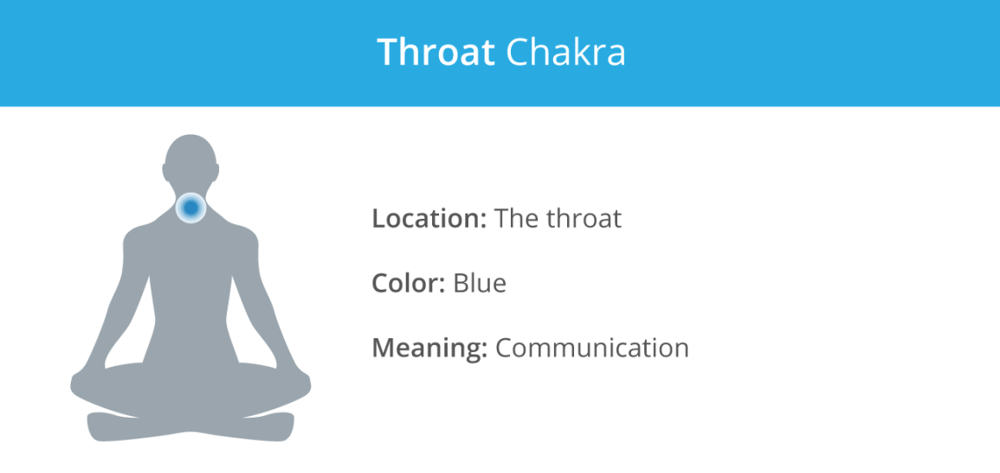
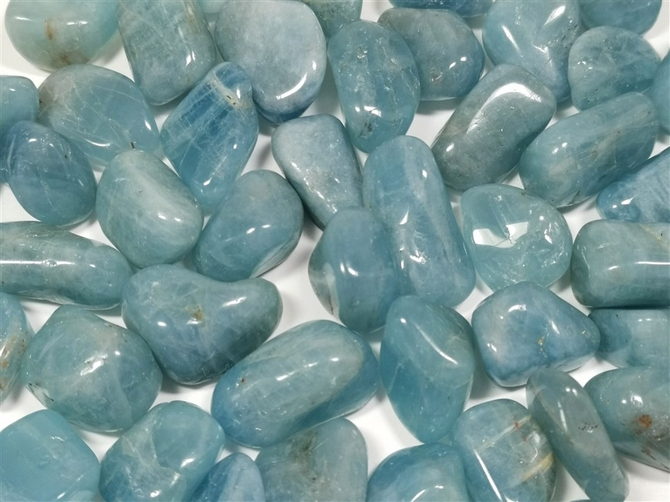
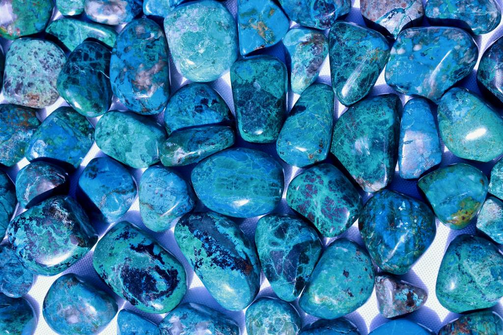
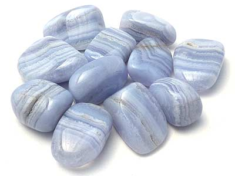

Throat Chakra

Image from https://www.healthline.com/health/fitness-exercise/7-chakras
The throat chakra, located in the throat area, is associated with communication, expression, creativity, and inspiration.
The main colour of the throat chakra is light blue/turquoise:
1. Aquamarine

Image from https://www.hehishelo.co.uk/Aquamarine-Tumble-Stone/3883.htm
Assists in:
- Public speaking
- Self-confidence
- Courage
- Communication
- Meditation
- Mental clarity
- Relieving stress and anxiety
- Good luck
A sparkling light blue stone, Aquamarine assists in overcoming the fear of public speaking – it activates the throat chakra to express the highest and most genuine truth.
It also helps us talk openly and without frustration in tough situations.
2. Chrysocolla

Image from https://cosmiccuts.com/products/chrysocolla-healing-tumbled-stone
Assists in:
- Communication
- Self-expression
- Listening
- Awareness
- Self-realisation
- Relieving stress and anxiety
- Creativity
A stone whose colours resemble Mother Earth, Chrysocolla encourages us to share our deepest wisdom for others to learn from our experiences.
It is also an excellent stone for those who are looking to develop themselves spiritually and emotionally.
3. Blue Lace Agate

Image from https://www.thecrystalchalice.com.au/product/agate-blue-lace-tumbled-stone/
Assists in:
- Self-confidence
- Communication
- Mental clarity
- Relieving stress and anxiety
- Public speaking
- Loyalty
A delicate blue gemstone of self-acceptance and trust, Blue Lace Agate allows us to express our true feelings to others.
It also helps us think with more clarity and focus on what is most important.
[Information adapted from https://7chakrastore.com/blogs/news/chakra-stones]